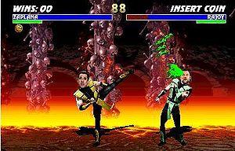
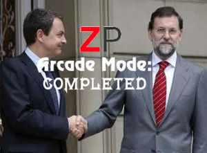

Mortal Monkloa
 De: La Frikipedia, la enciclopedia extremadamente seria.
De: La Frikipedia, la enciclopedia extremadamente seria.
De la serie Videojuegos:
Mortal Monkloa

| Desarrollado por:
|
Midway
|
| Distribuido por:
|
Namco/Bandai
|
| Diseñado por:
|
Tarantino
|
| Motor
|
El clásico Firenze V12
|
| Género(s)
|
Lucha, Beat´em Up
|
| Fecha de lanzamiento:
|
de martillo
|
| Modos de juego:
|
Arcade, Team Arcade, Versus, Team Versus, Survival, Training, Be a President, Coup d´État, Legalizate Homosexual Marriages...y la lista no se acaba
|
| Requisitos:
|
Odiar a algún político
|
| Disponible en:
|
Japon
|
| Formatos:
|
En cazuela de madera
|
| Edades:
|
+18
|
| Puntuaciones:
|
9.5/10 (Morostation) ; 9.9/10 (Jebi consolas)
|
quieres más, leete el artículo
¿Eres facha? ¿Eres rojo? ¿O eres de centro y la política te importa una mierda lo que yo sé? Da igual, porque de todos modos, éste es tu juego. A los chicos de Midway se les ocurrió, durante una noche de colocones, petas y demás, inventar este juego, el cual sigue la estela de su archiconocido Mortal Kombat. De hecho, usa su mismo motor gráfico (12 válvulas) e incluye el sistema de fatalities. ¿No te cae bien el presi ZP? ¡Pues inicia el modo arcade eligiéndote a su archienemigo el Señor No! ¿Quieres revivir viejas batallas durante la época franquista? ¡Entonces, Paquito es tu personaje! Prepárate para disfrutar en tu salón recreativo de la acción arcade más realista del mercado: Mortal Monkloa PWN35 Y0U!!!
Modos de Juego
 Una captura del juego. Sí, el
Señor No tiene la sangre verde.
 Ending del modo arcade de
ZP. Al final, consigue hacer las paces con
Rajoy, aunque éste sigue un poco distante.
- Modo Arcade (Historia):
Aquí el jugador elige a su personaje favorito y tiene que superar una serie de combates hasta llegar al combate final contra el mutante Fragasaurus, el cual ha sido resucitado por los del PP.
- Team Arcade:
Lo mismo que el arcade, pero aquí se elige a un equipo de personajes, los cuales tienen un Ending en común.
- Survival:
El personaje del jugador sólo tiene una barra de vida y tiene que superar tantos combates como pueda para establecer nuevos récords, cual garrota.
- Team Survival:
Lo mismo que el survival, pero por equipos. Cuando un personaje muere, el control pasa al siguiente miembro del equipo y así hasta que el jugador pierda todos los personajes.
- Training (Entrenamiento):
El modo para practicar los combos, llaver y fatalities. El muñeco de pruebas es Stalin.
- Coup d´État (Golpe de Estado):
El modo favorito de Tejero, en este modo, es una lucha a muerte con el jefe final, el cual será el presidente del gobierno actual. El ganador será coronado como nuevo presidente del gobierno. Éste modo, es algo similar a un Title Match en la WWE.
- Legalizate Homosexual Marriages:
En este modo, nos enfrentamos a los esbirros del Vaticano en nuestra cruzada por legalizar los matrimonios de maricas y bolleras homosexuales. Hay que ir avanzando en escenarios de Scroll Lateral hasta llegar al Vaticano, donde nos enfrentaremos en una Boss Fight con el mismísimo Ratzinger Z.
Choose your Fighter
Fatalities de los personajes
- Alberto Ruiz Gallardón:
- Madrid is under construction: Ambos personajes se teletransportan a las catacumbas subterráneas que hay bajo Madrid, y allí Gallardón le hace un uppercut al enemigo y lo empala en una estalactita.
- Felipe González:
- Red Scorpion: Felipe se transforma en Dolph Lundgren, el cual saca una UZI y acribilla al enemigo.
- José Bono:
- Bono´s Pronunciation Attack: Se pondrá a pronunciar la "S" (J) al lado de tu oído tan fuerte que la cabeza te explotará.
- José Luis Rodríguez Zapatero:
- Negociation: ZP puede llegar a ser muuuuuuuuuuuuuuuuuuuuuuuuuuuuuuuuy paciente, por lo que se estará sentado contigo frente a frente en una mesa negociando la paz, hasta que mueres de viejo.
- Jimenez Losantos:
- COPE´s Hertzian Strike: Jiménez Losantos se saca una radio de la gabardina, la deja al lado del enemigo y se va. La radio genera unos 9990 decibelios de sonido, así que al enemigo le explota la cabeza y posteriormente el resto del cuerpo. Es, posiblemente, el fatality más gore de todo el juego.
- Ángel Acebes:
- Sloooooooooooooooooooooooowly Fataaaaaaaaaaaaaality: Acebes le hace un uppercut a su enemigo y lo decapita, todo esto a cámara lenta y posteriormente con repetición, para regodeo del jugador ganador.
- José María Aznar:
- Calling to Jorgito: Ánsar se saca un móvil para llamar a su amigo Jorge, acto seguido cuelga, y a los 3 segundos un Misil Balístico InterContinental barre el escenario (y medio país).
- Alejandro Agag:
- Plug Power: Agag se saca un móvil para llamar a su suegro Ánsar, el cual llama a su vez a su amigo Jorge; acto seguido cuelga, y a los 3 segundos un Misil Balístico InterContinental barre el escenario (y medio país).
- George W. Bush:
- Condoleeza´s Striptease: Bush llama a Condoleeza Rice, la cual hace un striptease...el oponente se suicida partiéndose el cuello él mismo.
- Magneto:
- Negative Polarization: Magneto te polariza negativamente, de modo que, al tener exceso de electrones, empiezas a atraer varios objetos de metal circundantes, tales como cuchillas, motosierras, chapas, etc; y mueres triturado por las cosas a las que atraes.
- Boomerang Crown: El Rey Magneto usa su corona cual bumerán y mueres decapitado.
- Eduardo Zaplana:
- Meteor Strike: Zaplana invoca a un meteorito (el que lo pone tan morenito), que cae sobre el rival y lo aplasta.
- Esperanza Aguirre:
- Gallardón Attack: Espe se saca de la manga a un clon de Gallardón y empieza a golpear con él al enemigo. Al final mueren el enemigo y el clon.
- Francisco Álvarez Cascos:
- Fair Play: Álvarez Cascos le pega una patá en los cojones al enemigo.
- Classic Uppercut: Álvarez Cascos decapita a su oponente con un potente Uppercut.
- Manuel Fraga Iribarne:
- Bukkake of Truth: Como el nombre indica, Fraga se pondrá a soltarte verdades sin condón. Tales verdades, son corrosivas; lo que quiere decir que mueres por el ácido.
- Adolf Hitler:
- Auschwitz Strike Attack: Se abre un vórtice espacio tiempo que te teletransporta a Auschwitz, donde te van a poner el culo fino. (Si en las cárceles normales y te ponen mirando a Escocia, en un campo de concentración nazi, ni te digo).
- Angry German Friend: Hitler ivoca al niño loco aleman y juntos te agarran a tecladazos
- Rita Barberá:
- Earth Element: Rita invoca a sus amigos los árboles (del elemento tierra), los cuales mutilan a su enemigo.
- Mariano Rajoy:
- Super Recorte Powerfull: Mariano sacará unas tijeras y te recortará en dos. Después pronunciará la palabra "Mississipi" provocando una alteración en el continuo espacio-tiempo y ya será renacimiento en el Corte Ingles, y tu personaje ni habrá nacido.
- Ultimate Shuriken Rush: El Señor No cogerá dos gaviotas (símbolo de su partido) y te las lanzará cual shuriken, decapitándote en el acto.
- Final FlaSHHHHHHHHH: Análogamente al fatality de Bono, el Señor No se pondrá a decir palabras con muchas eses (e incluso aunque las palabras no lleven esta letra la pronuncia); hasta que mueras ahogado en saliva.
- Teófila Martínez:
- Kick in Eggs/Fairplay: Teófila le pega una patá en los cullons al enemigo. No se sabe si es más potente este fatality o el de Cascos.
- Augusto Pinochet:
- Pinnochi´s Fatality: Pinochet se transforma en pinocho y empala al enemigo con su nariz.
- Fidel Castro:
- Autofall: Fidel Castro se cae de cabeza, y el enemigo muere descojonándose de risa.
- Francisco Franco:
- Swamp´s Inauguration: Ambos personajes son teletransportados a un pantano, el cual inaugura Franco (con convite incluido). Después de un par de canapés y de colegueo con el enemigo, le lanza un uppercut, y el enemigo cae hasta el fondo del pantano, el cual, después de haber caído el enemigo a lo más hondo, empieza a llenarse de agua.
- Vile Stick: Paquito amarra a su enemigo a una silla, le ata los pies y las manos y le mete un sacacorchos por la nuca.
- Benito
Camela Mussolini:
- Fascist Strike: Mussolini llama a su Guardia Personal, los cuales fusilan al enemigo. Una vez el enemigo esté muerto en el suelo, Mussolini sigue cebándose en él con un revólver.
Lista de Niveles y sus Stage Fatality
- Obras de la M30
- Stage Fatality: Golpea con un gancho al enemigo, y verás como éste cae al carril de sentido contrario de la autovía y es arrollado por numerosos vehículos.
- Palacio de la Monkloa
- Stage Fatality: Dale un golpe bajo al enemigo y éste será empalado por una bandera de Espiña. Morirá como un patriota. Al morir empalado, la bandera se iza.
- Goatseman´s lair (Guarida del Goatseman)
- Stage Fatality: Si golpeas con un gancho al enemigo, éste será absorbido por el ano del Goatseman.
- Monkloa´s Rooftop (Azotea de la Monkloa)
- Stage Fatality: Al golpearle con un gancho al enemigo, éste cae desde el tejado hasta el suelo.
- Prestige semihundido
- Stage Fatality: Al realizarle un ataque aéreo al oponente, éste será incrustado en el petrolero y morirá ahogado en el alquitrán.
- Valle de los Caídos
- Stage Fatality: De un uppercut, el enemigo sube muy arriba y al final cae, para morir empalado en la cruz gigante que hay.
- Playa Cubana (con balseros huyendo a Florida de fondo)
- Stage Fatality: Al hacerle un uppercut al enemigo, éste cae al mar y es devorado por tiburones.
- Islas Azores
- Stage Fatality: Al hacerle un uppercut al enemigo, éste morirá triturado con las aspas de un helicóptero.
- Kabul
- Stage Fatality: Al realizar un golpe bajo contra el enemigo, éste quedará temporalmente inconsciente, y tu personaje desaparecerá. Al poco tiempo aparecen talibanes con cinturones de cartuchos de goma 2 acoplados al pecho y se inmolarán; y junto con ellos, se llevarán a tu enemigo.
- Chueca
- Stage Fatality: Al realizarle un golpe bajo al enemigo, éste quedará temporalmente inconsciente. Al poco tiempo aparece una horda de travestis los cuales violan a tu personaje hasta la extenuación; y poco después muere deshidratado.
- The Pit
- Stage Fatality: Al realizarle un uppercut al enemigo, éste cae hasta el fondo del abismo.
- Aeropuerto de Barajas
- Stage Fatality: Al realizarle un uppercut al enemigo, éste cae en el interior de una turbina de avión y muere calcinado.
- Perejil Island
- Stage Fatality: Al realizar un ataque aéreo al oponente, el golpe llamará la atención a un
escuadrón de Jinetes de Cabras Marroquíes que os fusilarán. (En el caso de que acierten)
- Techo de Avion
- Stage fatality:Al realizar una patada voladora lanzas al elemigo a un volcan donde sale mas chamuscado que en un incendio.
- Estadio La Bombonera (Especial para el Argentina Edition)
- Stage Fatality: Al golpear al enemigo con un gancho, caera sobre las bancas del estadio, en donde morirá siendo golpeado, pateado, tirado de los pelos y de ultima, violado por los barrabravas de Boca Juniors.
- Villa 31 (Especial para el Argentina Edition)
- Stage Fatality: Al atacar al enemigo con un gancho, caerá sobre el conjunto de casas de la Villa 31, en donde le espera la muerte siendo disparado por un villero.
Trucos
- Si en la pantalla del título pulsamos A + B + C + X + Y + Z, la máquina recreativa se conecta a Internet, da igual que haya conexión o no, y que esté enchufada o no (es más, se conecta a Internet incluso sin necesidad de electricidad); y te redirige el navegador hacia (oh, no!!, no lo digas!!!! NOOOOOOOOOOOOOOOOOOOOOOOOO!!!!!!!!!!) Goatse.cz!!!!!!
¿Sabías que...
- ...el personaje más equilibrado del juego es Eduardo Zaplana?
- ...el Señor No es de los pocos personajes que poseen 2 fatalities?
- ...el jefe final del juego es el Fragasaurus?
- ...en Japón, éste juego es distribuido por Sega?
- ...en el día que salió a la venta (27 de Agosto de 666) vendió más de dos millones de copias SÓLO EN ESPIÑA?
- ...Mortal Monkloa 2 está en fase de desarrollo?
- ...ha sido calificado por varios medios especializados como el mejor juego de lucha de toda la historia?
- ...en Espiña ha sido calificado por el PEGI como 3+?
- ...Mortal Monkloa 2?
- ...el Goatseman quizá sea uno de los nuevos personajes seleccionables del Mortal Monkloa 2?
Ver también
Enlaces Externos
|
|
 Shooter Shooter
 Terror Terror
 Velocidad Velocidad
 Rol Rol
 Estrategia Estrategia
 Aventuras Aventuras
 Fight! Fight!
 Clásicos Clásicos
 Deportivos Deportivos
 Aventura gráfica Aventura gráfica
 Novela visual Novela visual
 Personajes de videojuegos Personajes de videojuegos
|
Autor(es):
- Max Slug
- Frikiman
- Khazike Khashondo
- Rodma
- Dark temptation
- Catacras
- Mr. Roboto
- Magiclopez
- Bladguer
- RAFALEITOR
Frikipedia 2005-2016, Licencia
GFDL 1.2 - Extraído por FrikiLeaks